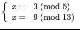
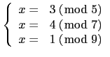
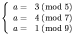
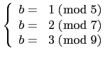

suivant: Reste chinois pour des
monter: Les entiers (et les
précédent: Résolution de au+bv=c dans
Table des matières
Index
Reste chinois : ichinrem, ichrem
ichinrem([a,p],[b,q]) ou ichrem([a,p],[b,q]) désigne
une liste [c,lcm(p,q)] formée de deux entiers.
Le premier nombre c est tel que
k 
,
d =
c +
k×lcm(
p,
q)
l
vérifie
d = a(mod p), d = b(mod q)
Si p et q sont premiers entre eux, il existe toujours une solution
d et toutes les solutions sont alors congrues modulo p*q
Exemples :
Trouver les solutions de :

On tape :
ichinrem([3,5],[9,13])
ou on tape :
ichrem([3,5],[9,13])
On obtient :
[-17,65]
ce qui veut dire que x=-17 (mod 65)
On peut aussi taper :
ichrem(3%5,9%13)
On obtient :
-17%65
Trouver les solutions de :

On tape tout d'abord :
tmp:=ichinrem([3,5],[4,7])
ou on tape :
tmp:=ichrem([3,5],[4,7])
On obtient :
[-17,35]
puis on tape
ichinrem([1,9],tmp)
ou on tape :
ichrem([1,9],tmp)
On obtient :
[-17,315]
ce qui veut dire que x=-17 (mod 315)
On peut aussi taper directement :
ichinrem([3%5,4%7,1%9])
On obtient :
-17%315
Remarque
ichrem (ou ichinrem) peut aussi être utiliser pour trouver les
coefficients de polynômes qui sont connus modulo plusieurs entiers, par
exemple trouver
ax + b modulo
315 = 5×7×9 tel que :
, 
On tape :
ichrem((3x+1)%5,(4x+2)%7,(x+3)%9)
On obtient :
(-17%315× x+156%315
ce qui veut dire que a=-17 (mod 315) et b=156 (mod 315).
suivant: Reste chinois pour des
monter: Les entiers (et les
précédent: Résolution de au+bv=c dans
Table des matières
Index
Documentation de giac écrite par Renée De Graeve